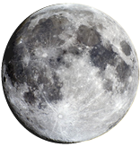
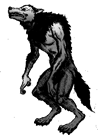

Werewolf
By Bryan

The moon begins to rise, over a cold and dark town,
A creature roams wild, while the moonlight shines down.
He is a man by day, as normal as any man could be,
But when the moon shines, everyone can then see.
What kind of monster he truly is, no one can explain,
So they all stay in fear, as he transforms his eternal pain.
Feeding on the innocence, his heart is made of stone,
Trapped in this horrible world, forever trapped here alone.
Never to share this curse, as it eats away his humanity,
Trapped in his mind at night, near to the break of insanity.
But there is still hope, maybe one day it will finally end,
Then he can be free once more, never to face this again.
He doesn't want to hurt anyone, but he cant stop the moon,
And he prays he will die, maybe that end will come soon.
But it doesn't, and again and again more innocence die,
By this horrid monster, with hate filled in his dark eyes.
But a Werewolf, this is what his heart will forever be,
Trapped in a human, consumed for the rest of eternity.

How to Kill a Werewolf
Items Needed
Make dagger, sword, and bullets
Murcury
Make bullets
Gun
Shooting werewolf
Blunt Instrument
Destroying Brain
Stake
Impaling heart